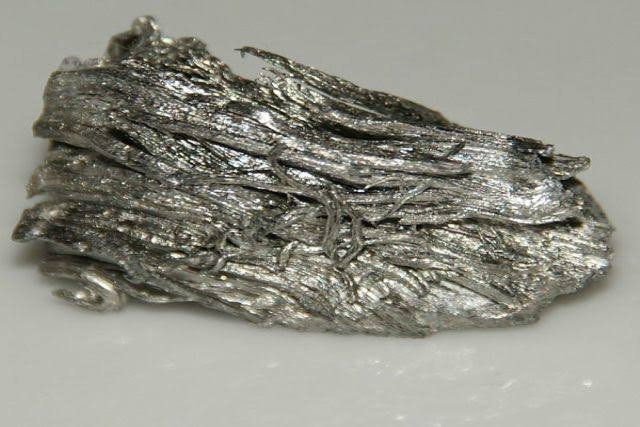

El lantano es un metal de tierras raras blando, de color blanco plateado, conocido por su alta reactividad. Se utiliza en baterías de vehículos híbridos, lentes ópticas, catalizadores y cerámicas avanzadas debido a sus excelentes propiedades eléctricas y ópticas.
El lantano presenta varias propiedades químicas que lo diferencian de muchos otros metales. Es un metal blando, dúctil y de color blanco plateado que se empaña ligeramente cuando se expone al aire, formando una fina capa de óxido. El elemento es reactivo, especialmente cuando está finamente dividido, y se combina fácilmente con el oxígeno para formar óxido de lantano. Su reactividad con el agua es moderada; cuando se expone a la humedad, el lantano se convierte lentamente en hidróxido, por lo que es preferible almacenarlo en aceite o en una atmósfera inerte.